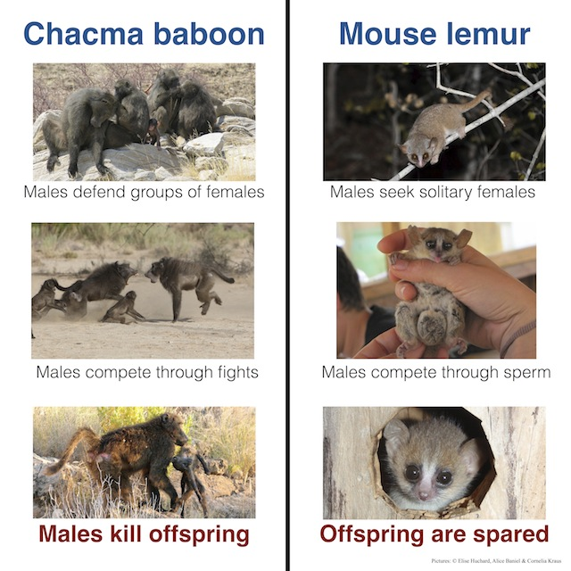
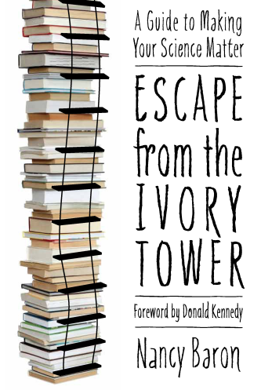

|
2) What
did it involve on my part to get our findings into the press?
First step: Prepare visuals
Find pictures that display the message
Make figures to visualize key points and relationships
Maybe in future make a movie narrating why I did the study
Start
early! It takes time to find pictures
Preparing visuals first helped me clarify the
key message:

Second
step: Write a press release
This is my official statement
Serves a very specific purpose: get attention
Follows its own rules: inverted triangle
"instead of setting out context and working towards findings - you
start with top attention-grabbing findings and then work outwards."
(thanks to Fred Lewsey
for explaining this to me)
Should include a balance among explanations, quotes and examples
because it will get
published as is, quoted in other
reports that are written without further contact, and used as starting
point for interviews. Your main audience will be journalists, and
some of them seem to have very clear expectations about what makes a good
press release.
Third step: Seek out and
work with professionals
Press officers at my institution and the journal help me write the
press release
They have specialized channels to organize outreach
They are there to help!
They were literally waiting for me!
There are additional, more specific support and learning resources
available:
Written materials to help prepare outreach
Nancy Baron has written a great book "Escape
from the Ivory Tower"

(by Island Press)
that introduces the message
box as a tool to convey core ideas.
Might think about taking
courses in the future
My university offers classes
#Scifund has materials on making videos
about research
Fourth step: Interact with journalists
Press officers have channels to contact trusted journalists
A few journalists have now mentioned that I should contact them about
future papers if I think I have something that might be of interest to
them
What about the
interviews with journalists?
Take my time (20-45 mins)
It will likely cover all
the details and include questions I don't expect. This is great
because it made me think about my research in ways that I hadn't
before. My recent interactions (for example with Jyoti
Madhusoodanan, Carl Zimmer, Helen Thompson,
Will Dunham or Susan Milius)
not only made me think about how to present my research, but also gave
me new inspirations for what it means and what to look at next!
Present key findings
They read the info, but
this is my chance to convey in my own words what I think is most
important
Explain how I did it
This is harder than I
thought - unlike broad talks where I usually glance over the specifics
of
the methods, here people want to know what I actually did - how did I
get that result
Have examples
Similar to the first step
of pictures etc., examples are a great way to visualize the problem and
what it means
Be aware of want for controversy
All reports seem to start with a controversy that my research resolves;
can be disagreement
with other scientists; issue that has been unresolved
for many years; explanation for counterintuitive observation, for
example why males
harm their own species. Kind of the opposite of these
setups. Will discuss in more detail in part 5
how to work with this format to get my own message across.
Here is an example showing the unexpected turns that
such interviews can take, and the insights that interactions can create
for me - a podcast with three of the great folks from BreakingBio on
the infanticide study and other related topics.
What
to do after the interviews?
Check transcripts?
I do not. Trust
science journalists. Those who contact you actually make an effort to
report correctly. It is also not different from a live radio interview.
But do check press release carefully!
This is my official statement. Point of reference that will be
distributed most widely.
Check stories?
Yes! See part 3.
Twitter? Facebook? Comments under stories?
Yes, use social media to distribute my efforts! And check them and the
websites with reports for what other people are saying - without
getting obsessed. But, except for targetted exchanges with specific
members (here's what I did for a different paper), they do not seem to be places for constructive exchange, see part 4.
|
Main message
I learned a lot
about my research from presenting it in a different way and interacting
with great journalists!
Continue to part 3
to find out where findings can end up.
|
|